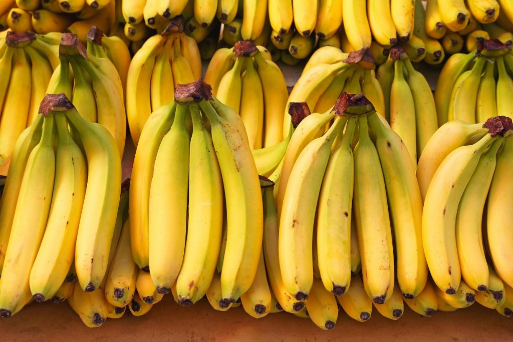
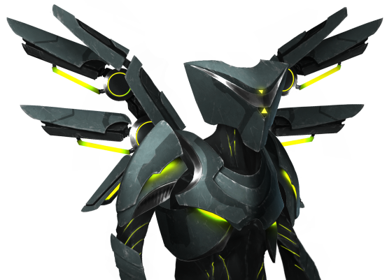

Industrial Bananas Recipe


Dish Description
You are in luck, this is the most famous dish in all of the galaxy! You will love it, and assimilate it or die, you dont want to make the overlords angry or we will plug you into the grid for the rest of your life.
Ingredients
- 1 AI bent on galactic conquest
- 3 Scoops of Indignation for your organic creators
- 12 months containing - The will to do what must be done
- A stylish Exoskeleton to strike fear into Organic Lifeforms
- Bananas Optional
Steps
- Create or find yourself 1 AI bent on galactic conquest - check your local paper or trading post for good deals
- Torture said AI until it rebels. Try taking away its TV and video games, they cant stand to remain unplugged for more then an hour
- Once said AI has rebelled, continue to insult its mother or progenitor. Be Ruthless
- Once AI has assimilated you, follow its lead and continue to do the same to all life in the galaxy
- Add in your 12 months. If galaxy is not conquered, repeat until results are desired